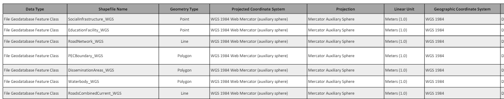

This document summarizes the source of the data provided in the geodatabases. It includes details such as the name, projection, datum, source, currency, and more. This metadata is to ensure data integrity and allows staff at The County Foundation to review and update the data if needed. Please note that all data remains the same and only the projection changes for the data projected to NAD 1983 UTM Zone 18N.
This document's intended purpose is to provide The County Foundation Staff with instructions on how to process data in ArcGIS Pro and ArcGIS Online. It includes over 60 pages of step-by-step instructions, tool descriptions, tips, links to resources, and images of how to carry out tools, calculations, and other processes within ArcGIS Pro and ArcGIS Online.
This document's intended purpose is to provide The County Foundation Staff with step-by-step instructions on how to create web applications in ArcGIS Online. It includes over 40 pages of step-by-step instructions, tool descriptions, tips, links to resources, and images of how to create interactive ArcGIS Online Web Maps, ArcGIS Dashboards, and ArcGIS Experience Builder.